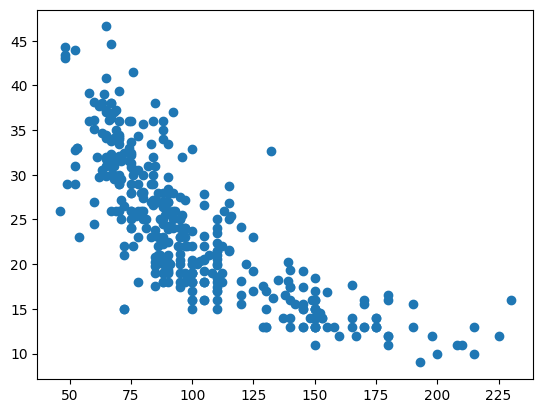
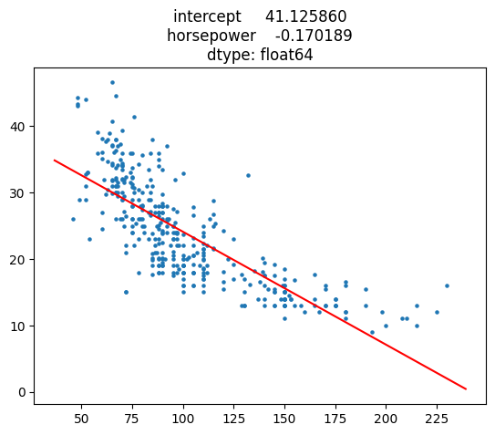
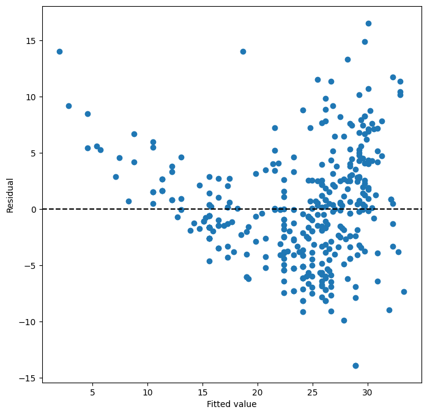
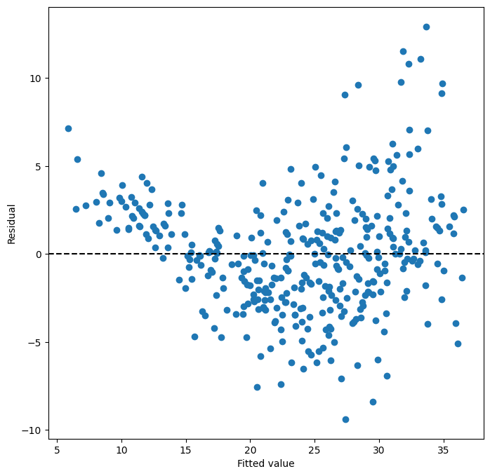
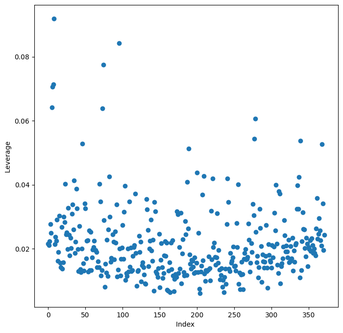

import pandas as pd
import numpy as np
import matplotlib.pyplot as plt
import statsmodels.api as sm
from statsmodels.stats.outliers_influence \
import variance_inflation_factor as VIF
from statsmodels.stats.anova import anova_lm
from ISLP import load_data
from ISLP.models import (ModelSpec as MS,
summarize,
poly)
df = pd.read_csv("../dataset/Auto.csv", na_values='?')
df = df.dropna()
df = df.iloc[20:,:]
df
|
mpg |
cylinders |
displacement |
horsepower |
weight |
acceleration |
year |
origin |
name |
| 20 |
25.0 |
4 |
110.0 |
87.0 |
2672 |
17.5 |
70 |
2 |
peugeot 504 |
| 21 |
24.0 |
4 |
107.0 |
90.0 |
2430 |
14.5 |
70 |
2 |
audi 100 ls |
| 22 |
25.0 |
4 |
104.0 |
95.0 |
2375 |
17.5 |
70 |
2 |
saab 99e |
| 23 |
26.0 |
4 |
121.0 |
113.0 |
2234 |
12.5 |
70 |
2 |
bmw 2002 |
| 24 |
21.0 |
6 |
199.0 |
90.0 |
2648 |
15.0 |
70 |
1 |
amc gremlin |
| ... |
... |
... |
... |
... |
... |
... |
... |
... |
... |
| 392 |
27.0 |
4 |
140.0 |
86.0 |
2790 |
15.6 |
82 |
1 |
ford mustang gl |
| 393 |
44.0 |
4 |
97.0 |
52.0 |
2130 |
24.6 |
82 |
2 |
vw pickup |
| 394 |
32.0 |
4 |
135.0 |
84.0 |
2295 |
11.6 |
82 |
1 |
dodge rampage |
| 395 |
28.0 |
4 |
120.0 |
79.0 |
2625 |
18.6 |
82 |
1 |
ford ranger |
| 396 |
31.0 |
4 |
119.0 |
82.0 |
2720 |
19.4 |
82 |
1 |
chevy s-10 |
372 rows × 9 columns
print(df.info())
print(df.describe())
<class 'pandas.core.frame.DataFrame'>
Index: 392 entries, 0 to 396
Data columns (total 9 columns):
# Column Non-Null Count Dtype
--- ------ -------------- -----
0 mpg 392 non-null float64
1 cylinders 392 non-null int64
2 displacement 392 non-null float64
3 horsepower 392 non-null float64
4 weight 392 non-null int64
5 acceleration 392 non-null float64
6 year 392 non-null int64
7 origin 392 non-null int64
8 name 392 non-null object
dtypes: float64(4), int64(4), object(1)
memory usage: 30.6+ KB
None
mpg cylinders displacement horsepower weight \
count 392.000000 392.000000 392.000000 392.000000 392.000000
mean 23.445918 5.471939 194.411990 104.469388 2977.584184
std 7.805007 1.705783 104.644004 38.491160 849.402560
min 9.000000 3.000000 68.000000 46.000000 1613.000000
25% 17.000000 4.000000 105.000000 75.000000 2225.250000
50% 22.750000 4.000000 151.000000 93.500000 2803.500000
75% 29.000000 8.000000 275.750000 126.000000 3614.750000
max 46.600000 8.000000 455.000000 230.000000 5140.000000
acceleration year origin
count 392.000000 392.000000 392.000000
mean 15.541327 75.979592 1.576531
std 2.758864 3.683737 0.805518
min 8.000000 70.000000 1.000000
25% 13.775000 73.000000 1.000000
50% 15.500000 76.000000 1.000000
75% 17.025000 79.000000 2.000000
max 24.800000 82.000000 3.000000
plt.scatter(df["horsepower"], df["mpg"])
<matplotlib.collections.PathCollection at 0x7482ad90a9c0>

X = pd.DataFrame({"intercept": np.ones(df.shape[0]), "horsepower": df["horsepower"]})
X.head()
|
intercept |
horsepower |
| 20 |
1.0 |
87.0 |
| 21 |
1.0 |
90.0 |
| 22 |
1.0 |
95.0 |
| 23 |
1.0 |
113.0 |
| 24 |
1.0 |
90.0 |
model = sm.OLS(df["mpg"], X)
result = model.fit()
summarize(result)
|
coef |
std err |
t |
P>|t| |
| intercept |
41.1259 |
0.758 |
54.222 |
0.0 |
| horsepower |
-0.1702 |
0.007 |
-24.281 |
0.0 |
result.params
intercept 41.125860
horsepower -0.170189
dtype: float64
fig, ax = plt.subplots()
ax.scatter(df["horsepower"], df["mpg"], s=5)
coef = result.params
xlim = ax.get_xlim()
ylim = (coef[0] + coef[1] * xlim[0], coef[0] + coef[1] * xlim[1])
ax.plot(xlim, ylim, 'r-')
ax.set_title(coef)
/tmp/ipykernel_152811/4053741418.py:6: FutureWarning: Series.__getitem__ treating keys as positions is deprecated. In a future version, integer keys will always be treated as labels (consistent with DataFrame behavior). To access a value by position, use `ser.iloc[pos]`
ylim = (coef[0] + coef[1] * xlim[0], coef[0] + coef[1] * xlim[1])
Text(0.5, 1.0, 'intercept 41.125860\nhorsepower -0.170189\ndtype: float64')

# confidence interval
params = np.array(result.params)
stderr = np.array(summarize(result)['std err'])
def conf_interval(params, stderr, x):
low = np.dot((params - stderr), x)
high = np.dot((params + stderr), x)
return low, high
conf_interval(params, stderr, [1, 98])
(23.003374498935447, 25.891374498935456)
pred = result.get_prediction([1, 98])
pred.conf_int(alpha=0.05)
array([[23.947671, 24.947078]])
ax = plt.subplots(figsize=(8,8))[1]
ax.scatter(result.fittedvalues, result.resid)
ax.set_xlabel('Fitted value')
ax.set_ylabel('Residual')
ax.axhline(0, c='k', ls='--');

df = df.drop(columns=['name'])
df.corr()
|
mpg |
cylinders |
displacement |
horsepower |
weight |
acceleration |
year |
origin |
| mpg |
1.000000 |
-0.768159 |
-0.803673 |
-0.783845 |
-0.832270 |
0.383589 |
0.568716 |
0.555810 |
| cylinders |
-0.768159 |
1.000000 |
0.953304 |
0.842559 |
0.902638 |
-0.449479 |
-0.296280 |
-0.554618 |
| displacement |
-0.803673 |
0.953304 |
1.000000 |
0.884850 |
0.946904 |
-0.475429 |
-0.315380 |
-0.612197 |
| horsepower |
-0.783845 |
0.842559 |
0.884850 |
1.000000 |
0.880128 |
-0.641154 |
-0.370743 |
-0.448932 |
| weight |
-0.832270 |
0.902638 |
0.946904 |
0.880128 |
1.000000 |
-0.381225 |
-0.297841 |
-0.578263 |
| acceleration |
0.383589 |
-0.449479 |
-0.475429 |
-0.641154 |
-0.381225 |
1.000000 |
0.205426 |
0.179090 |
| year |
0.568716 |
-0.296280 |
-0.315380 |
-0.370743 |
-0.297841 |
0.205426 |
1.000000 |
0.160888 |
| origin |
0.555810 |
-0.554618 |
-0.612197 |
-0.448932 |
-0.578263 |
0.179090 |
0.160888 |
1.000000 |
X = MS(df.drop(columns=['mpg'])).fit_transform(df)
model = sm.OLS(df['mpg'], X)
result2 = model.fit()
summarize(result2)
|
coef |
std err |
t |
P>|t| |
| intercept |
-19.7169 |
4.963 |
-3.973 |
0.000 |
| cylinders |
-0.4081 |
0.349 |
-1.170 |
0.243 |
| displacement |
0.0168 |
0.009 |
1.963 |
0.050 |
| horsepower |
-0.0174 |
0.015 |
-1.159 |
0.247 |
| weight |
-0.0063 |
0.001 |
-8.213 |
0.000 |
| acceleration |
0.1110 |
0.105 |
1.059 |
0.290 |
| year |
0.7734 |
0.054 |
14.294 |
0.000 |
| origin |
1.3909 |
0.285 |
4.886 |
0.000 |
anova_lm(result, result2)
|
df_resid |
ssr |
df_diff |
ss_diff |
F |
Pr(>F) |
| 0 |
370.0 |
8778.242950 |
0.0 |
NaN |
NaN |
NaN |
| 1 |
364.0 |
4119.951551 |
6.0 |
4658.291399 |
68.593771 |
7.767048e-57 |
ax = plt.subplots(figsize=(8,8))[1]
ax.scatter(result2.fittedvalues, result2.resid)
ax.set_xlabel('Fitted value')
ax.set_ylabel('Residual')
ax.axhline(0, c='k', ls='--');

vals = [VIF(X, i)
for i in range(1, X.shape[1])]
vif = pd.DataFrame({'vif':vals},
index=X.columns[1:])
vif
|
vif |
| cylinders |
11.149785 |
| displacement |
23.969825 |
| horsepower |
9.578183 |
| weight |
14.029209 |
| acceleration |
2.414266 |
| year |
1.177402 |
| origin |
1.745033 |
infl = result2.get_influence ()
ax = plt.subplots(figsize =(8 ,8))[1]
ax.scatter(np.arange(X.shape [0]), infl.hat_matrix_diag)
ax.set_xlabel('Index ')
ax.set_ylabel('Leverage ')
np.argmax(infl.hat_matrix_diag)
8

df.describe()
|
mpg |
cylinders |
displacement |
horsepower |
weight |
acceleration |
year |
origin |
| count |
372.000000 |
372.000000 |
372.000000 |
372.000000 |
372.000000 |
372.000000 |
372.000000 |
372.000000 |
| mean |
23.760215 |
5.384409 |
188.114247 |
102.037634 |
2956.629032 |
15.738441 |
76.301075 |
1.594086 |
| std |
7.833502 |
1.672699 |
99.994614 |
36.079109 |
850.155868 |
2.590570 |
3.502898 |
0.810489 |
| min |
9.000000 |
3.000000 |
68.000000 |
46.000000 |
1613.000000 |
9.500000 |
70.000000 |
1.000000 |
| 25% |
17.600000 |
4.000000 |
100.250000 |
75.000000 |
2219.750000 |
14.000000 |
73.000000 |
1.000000 |
| 50% |
23.000000 |
4.000000 |
141.000000 |
91.500000 |
2750.000000 |
15.500000 |
76.000000 |
1.000000 |
| 75% |
29.575000 |
6.000000 |
258.000000 |
115.250000 |
3581.750000 |
17.300000 |
79.000000 |
2.000000 |
| max |
46.600000 |
8.000000 |
455.000000 |
230.000000 |
5140.000000 |
24.800000 |
82.000000 |
3.000000 |
result2.rsquared
0.8190301157401636
result.rsquared
0.6144135213369303